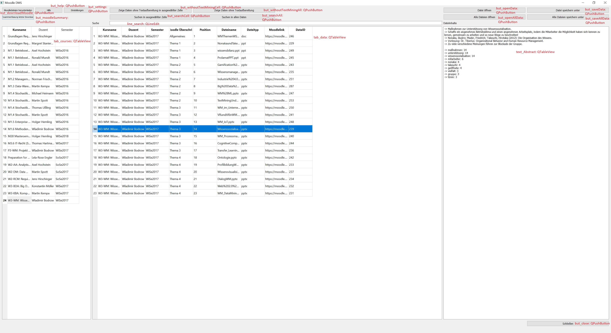
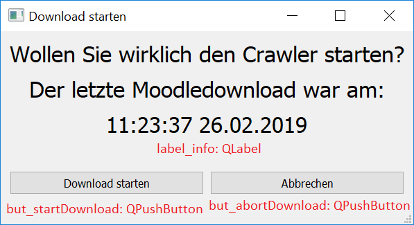
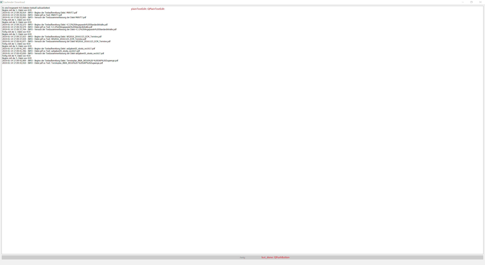
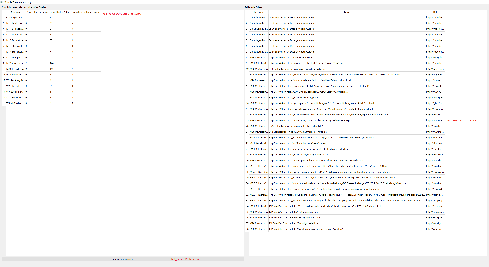
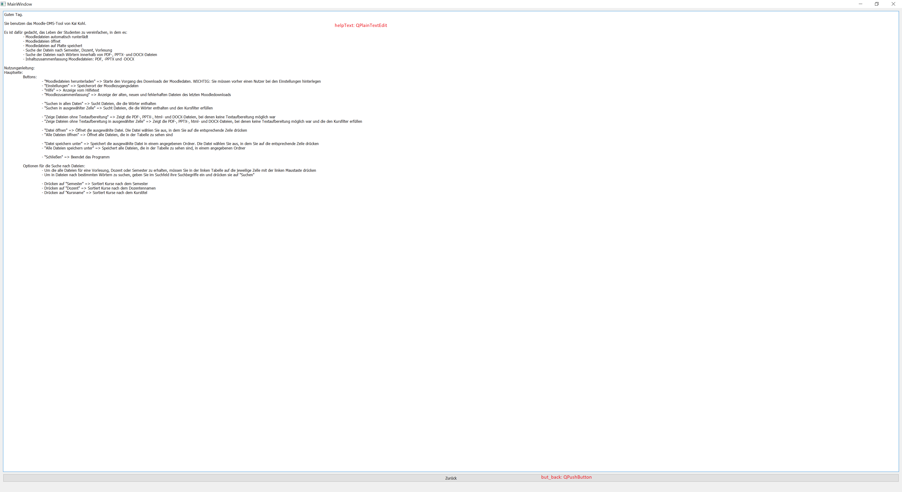
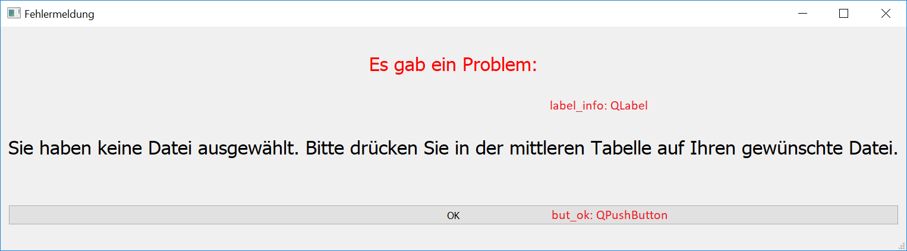

GUI folder¶
In this folder are all required guis.
MainPage.ui¶
The main page is the “MainPage.ui”. This window looks like this:
This is the normal starting windows for a user, which already stored is moodle information in the database. At this page the user can search for CourseData. Open and save the data. Get help, go to settings, get the summary of the last moodle download or start a new moodle download process.
StartDownload.ui¶
This windows is for informing the user, when his last moodle download process was. If he clicks on “Start Download” load the CurrentDownload.ui. If he clicks “Abbrechen” go back to the main page.
CurrentDownload.ui¶
This windows is for informing the user, what happen in the moodle download process, like if a course oder a file was found. After the download is finish, the button will connect to load the moodle summary.
MoodleSummary.ui¶
This windows is for informing the user, how many new, old and failure data were found in the moodle download process. It also display the specific failiures in the download process. If this windows was loaded after the moodle download, the click on the button will open the CurrentDownload.ui again. But this time the text processing will be shown in the window. If the calling side was the start side, the click on the button will load the “MainPage.ui”. After the download is finish, the button will connect to load the moodle summary.
Help.ui¶
This windows is for informing the user how he can use the application.
ErrorMessage.ui¶
This windows is for showing the user what he did false.
